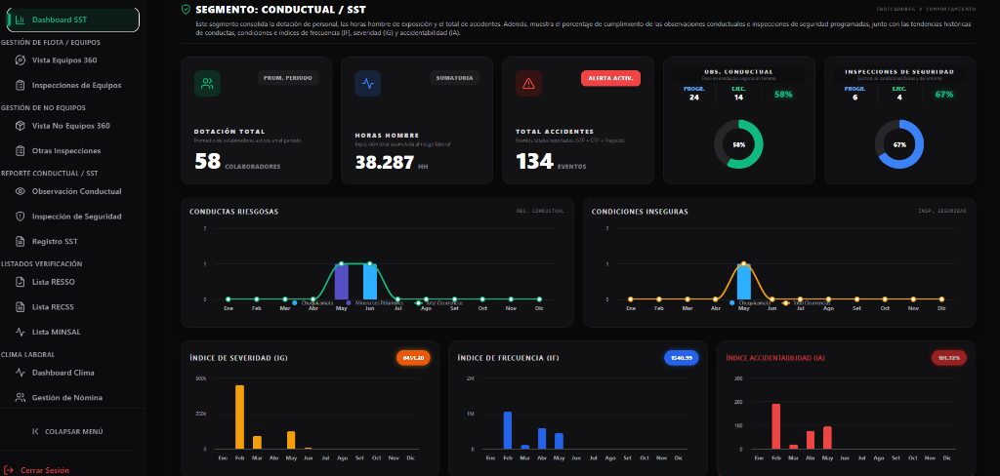
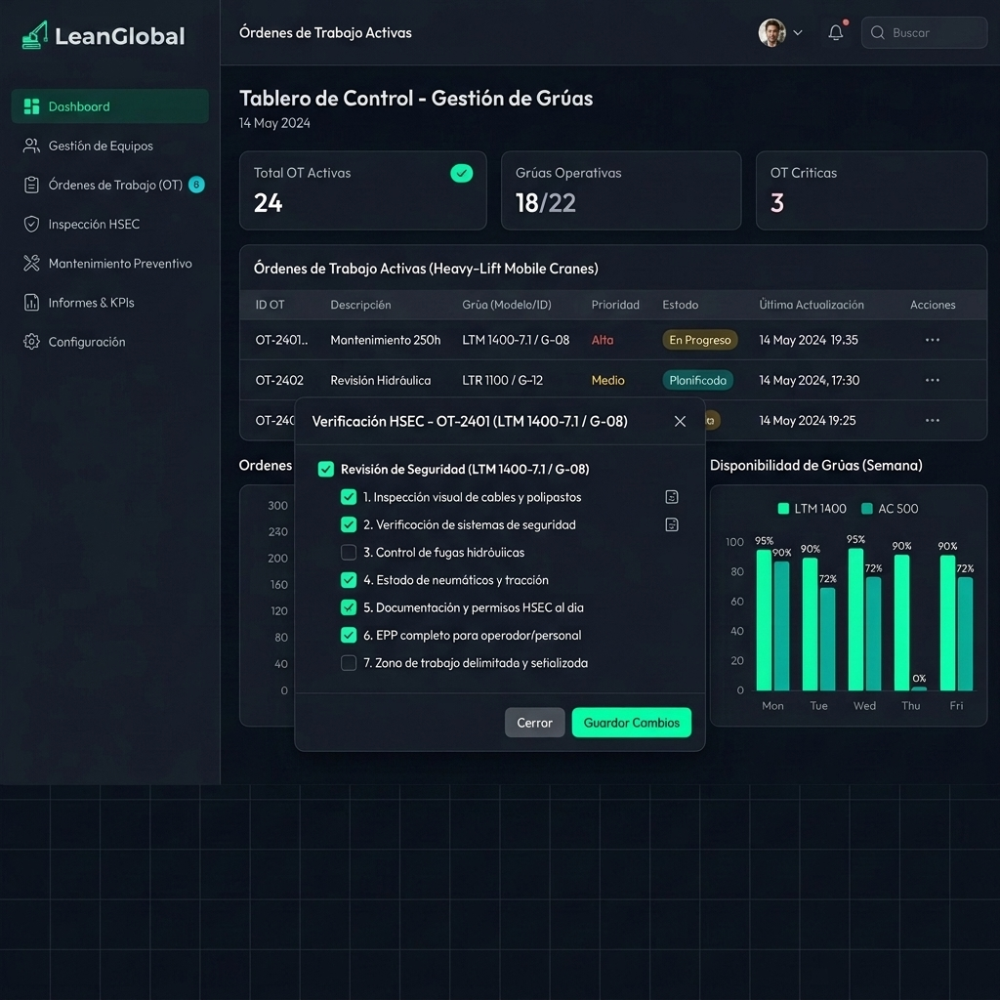
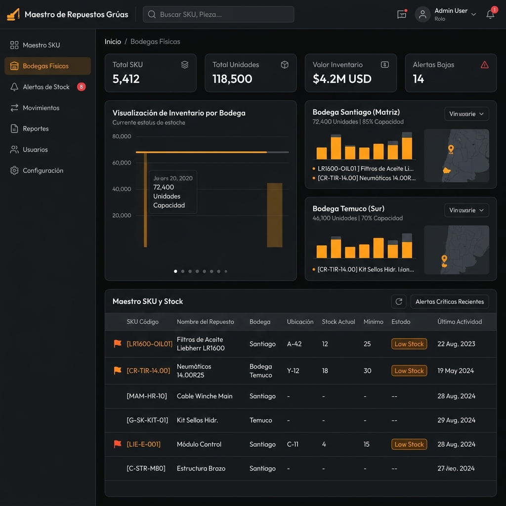

Ampliación Ecosistema Digital GSP:
Mantenimiento de Flota, Adquisiciones
& Integración Contable Financiera
Adendum formal que complementa la propuesta base incorporando la suite de talleres (OTs preventivas y correctivas), control de bodegas físicas, cálculo automatizado de márgenes del servicio, y el roadmap de desconexión de Laudus ERP.
1. La Carretera para la Gestión Integral (SGI) de GSP
Al tomar la decisión de implementar la plataforma de LeanGlobal, Grúas San Pablo no adquiere una herramienta informática aislada, sino una Carretera Tecnológica de Crecimiento Infinito. La arquitectura modular, construida en la nube de Google Cloud Platform (GCP) y con bases de datos nativas de alto rendimiento, es la base fundacional para consolidar el **Sistema de Gestión Integral (SGI)** de la compañía.
Las grandes forestales (Arauco, CMPC) y mineras ejecutan auditorías rigurosas e imprevistas de contratos y HSEC. Nuestro SGI centraliza firmas FES de terreno, checklists preoperacionales, orómetros, mantenimiento de grúas y acreditación del personal en un solo expediente digital inalterable. El auditor obtiene toda la información histórica en 3 clics, garantizando un 100% de cumplimiento y aprobación de auditorías futuras.
GSP puede iniciar resolviendo el dolor del despacho operacional y checklists (Base). Sin embargo, la infraestructura queda "pavimentada" para activar Mantenimiento, Bodegas, Facturación e incluso Contabilidad en el futuro. Todo corre en la misma base de datos, eliminando las costosas y riesgosas migraciones de sistemas a mediano y largo plazo.
Para adjudicarse contratos de izaje pesado de gran envergadura, los mandantes exigen que los proveedores posean un SGI auditable y certificado. Demostrar en sus carpetas técnicas de licitación que operan sobre esta plataforma digital les da una **ventaja competitiva arrolladora ante su competencia**.
2. El Proceso Operacional Detallado de GSP
LeanGlobal compromete el soporte y la automatización del proceso operativo unificado de GSP, estructurando el sistema en 5 fases lógicas que mapean exactamente la dinámica real de su negocio de izajes:
Cotizador por Familia
Mapea las 9 familias de productos (grúas telescópicas, plataformas PTA, tijeras, plumas, grúas horquilla, manipuladores, camas bajas, accesorios, y riggers) asociando condiciones y anexos específicos.
Programado vs. Disponibilidad
Valida si el servicio reserva equipo "a todo evento" o si queda sujeto a disponibilidad logística diaria.
Datos Técnicos y Site Visit
Captura pesos, dimensiones de carga, radios, alturas de trabajo y link de ubicación geográfica de la obra.
Coordinación de OT
El Coordinador aprueba y convierte el requerimiento en una Orden de Trabajo (OT) activa asignando operador, rigger y grúa.
Alertas al Personal
Notificación automática y directa al teléfono/tablet del operador asignado, exigiendo su aceptación digital.
Control de Acreditación
Cotejo automático de vigencia de licencias Clase D, exámenes médicos de altura y pases de faena del operador.
Jefe de Patio (Checklist)
Generación de checklist digital pre-operacional en patio con registro fotográfico obligatorio del estado de la maquinaria.
Logística de Maniobras
Jefe de Patio controla y valida por sistema la carga correcta de contrapesos y accesorios solicitados para el izaje.
Geocerca & Permisos MOP
Activación de geocerca GPS sobre la ruta y validación del almacenamiento del Permiso de Vialidad MOP sobredimensionado.
Trazado Desplazamiento
El conductor inicia el viaje en la App, registrando telemetría GPS automática cada 5 minutos hasta su destino.
Inicio y Término en Faena
El operador registra la hora exacta de inicio de posicionamiento, colación, y término de faena desde su App offline.
Reglas de Horas Mínimas
Validación automática por software de las horas mínimas pactadas por contrato para evitar cobros sub-valuados.
Firma del Cliente (FES)
El cliente en obra firma digitalmente en la pantalla de la tablet del operador, validando el servicio con geolocalización GPS.
Margen Operativo Directo
Registro de costos del servicio (peajes, romana, combustible, alimentación, pensión de la tripulación y remuneración de operarios).
Análisis 360° Financiero
El Analista audita y valida que las horas reportadas en terreno cuadren matemáticamente con la cotización aprobada.
Facturación Eficiente
Cierre de EDP por el Coordinador de Operaciones y emisión directa de la factura DTE vinculada a la OC del cliente.
3. Madurez de Software: Pantallas de Control Operativo y Seguridad (SGI)
No estamos vendiendo una idea teórica. A continuación, te presentamos el estándar de diseño y madurez de interfaces de usuario que implementaremos para GSP, basado en el exitoso ecosistema de gestión en tiempo real con modo oscuro de alta fidelidad:
A. Consola Ejecutiva y Dashboard SST Integrado
Esta consola de Torre de Control SST consolida las observaciones conductuales y los checklists de seguridad en tiempo real. Permite visualizar de forma interactiva indicadores críticos como índices de severidad (IG), frecuencia (IF) y accidentabilidad (IA), así como tendencias históricas por faena o sucursal.

B. Mantenimiento y Control de Disponibilidad Mecánica en OTs
Interfaz premium de talleres y mantenimiento. Centraliza la planificación de Órdenes de Trabajo (OTs) preventivas y correctivas de la flota, el registro digital de horómetros de motor e izaje, y el control técnico del estado de las grúas de alto tonelaje para asegurar su disponibilidad en faena.

C. Maestro de Repuestos SKU, Bodegas y Valorización Logística (WMS)
Tablero de control para el departamento de adquisiciones y bodegas de repuestos críticos. Monitorea en tiempo real los niveles de stock (neumáticos, filtros, cables de izaje), valoriza existencias al costo promedio ponderado y gestiona de forma automatizada las alertas de quiebre de stock crítico bajo la **metodología de clasificación y priorización ABC** (según criticidad operacional, valor y rotación de los repuestos).

4. Biblioteca de Checklists e Inspecciones HSEC Técnicas
Nuestra experiencia con Transmac nos ha permitido consolidar una suite de **más de 60 checklists, pautas mecánicas y formularios de seguridad en el trabajo** alineados con los estándares de mandantes mineros y forestales de Chile (como Codelco, Celulosa Arauco y Minera Los Pelambres).
GSP tendrá acceso inmediato a estas plantillas pre-construidas en su base de datos para cargarlas a la App móvil de sus operadores sin incurrir en costos adicionales de desarrollo:
| Categoría de Inspección | Inspecciones y Checklists Específicos Soportados | Efecto en Terreno y Acreditación GSP |
|---|---|---|
| 1. Core de Seguridad & Consentimiento |
• Inspección de Seguridad General [FRM-SST-INSP-001]
• Fatiga y Somnolencia del Operador [FOR-SEG-011] • Consentimiento Legal Uso Documentación Electrónica [ID-500] |
Firma Legal Bind: Validez jurídica ante inspecciones del trabajo y la firma FES de consentimiento digital del operador. |
| 2. Equipos e Izaje Mayor |
• Check list Grúas de Alto Tonelaje [CL-SGI-CDCH-02-SST-009]
• Check List Camión Pluma / Camión Rampla [CL-MLP-02-002] • Check List Alzahombre / Man-Lift / Tijeras [CL-SGI-CDMH-020] |
0% Papel en Taller: El operador o Jefe de Patio valida estado motor, mangueras hidráulicas, outriggers y orómetros. |
| 3. Accesorios de Izaje (No-Equipos) |
• Check List Grilletes [CL-SGI-CDCH-02-SST-005]
• Check List Eslingas de Cadenas / Poliester Plana [FOR-OP-DN-002] • Check List Estrobos de Acero / Accesorios de Amarre |
Cumplimiento de Rigging: Asegura que no se realice ninguna maniobra si las eslingas o grilletes tienen vencimiento o daño físico. |
| 4. Conducta y Terreno HSEC |
• Observación Conductual de Terreno [OBS-13-7]
• Verificación de Estabilidad del Suelo de Izaje [FOR-SGI-CDMH-022] • Control de Velocidad de Viento en Pluma [CL-SGI-CDCH-008] |
Derivación a Superior: Si se reporta viento sobre 15 m/s o suelo inestable (<35 t/m²), la App bloquea el izaje y notifica a gerencia. |
5. Extensión del Sistema de Gestión Integral (SGI) y Módulos del DS 44
El ecosistema de LeanGlobal cuenta con la base arquitectónica necesaria para implementar módulos avanzados de seguridad y salud en el trabajo (SST) alineados con las auditorías exigidas por los grandes mandantes, estructurándose de la siguiente forma:
Automatiza la Matriz de Identificación de Peligros y Evaluación de Riesgos (MIPER) de forma activa e interactiva:
• Calculadora de Riesgo Puro y Residual: Campos parametrizados que calculan automáticamente la criticidad del riesgo (Probabilidad × Severidad) antes y después de las medidas de control.
• Filtros de Enfoque Inclusivo: Checkboxes obligatorios para indicar si el riesgo evaluado afecta de manera diferenciada por perspectiva de género, discapacidad y trabajadores sensibles.
• Alertas de Caducidad: Notificación automática y obligatoria de revisión al registrarse un accidente o transcurrir 12 meses.
Automatiza la burocracia y validez legal de las actividades del Comité Paritario de Higiene y Seguridad:
• Votación Electrónica: Pantalla de inscripción, votación encriptada (un voto por trabajador, secreto y auditable) y generación del Acta de Escrutinio y Acta de Constitución listas para firma digital.
• Control del Curso OPR: Perfil de miembro con contador en reversa de 6 meses para capacitarse en Prevención de Riesgos (20 horas obligatorias).
• Gestor de Actas Mensuales: Repositorio con firma electrónica simple que envía copias automáticas al prevencionista y representantes del comité.
El motor que mueve el Programa de Prevención de Riesgos de GSP:
• Kanban Preventivo: Asignación y seguimiento de tareas derivadas de la MIPER, con responsables, plazos y niveles de criticidad.
• Planes de Emergencia: Sección de descarga rápida en la App móvil para que los operadores tengan acceso offline al plan ante catástrofes climáticas.
• Encuestas de Percepción: Envío periódico de cuestionarios anónimos para evaluar la cultura de seguridad de los trabajadores.
La interfaz de cara al empleado, optimizada para smartphones:
• Inducción Digital (ODI): Pantallas donde el nuevo trabajador revisa los riesgos de su puesto, ve videos formativos y rinde un test para generar el documento ODI firmado digitalmente.
• Buzón de Reportes de Incidentes: Acceso rápido para tomar una foto a una condición insegura en terreno y enviarla al prevencionista o comité (con opción anónima).
6. Copiloto Inteligente: IA Vectorial & RAG (Búsqueda Semántica de Operaciones)
En la gestión industrial moderna, los equipos de Operaciones, Calidad y HSE de GSP se enfrentan a un desafío crítico: manejar miles de procedimientos de izaje, manuales de fabricantes de grúas (Liebherr, Tadano), normativas mineras y reportes históricos. Para acelerar la consulta de datos en terreno sin búsquedas manuales ineficientes, la plataforma de LeanGlobal cuenta con la infraestructura tecnológica para integrar:
IA Vectorial
Convierte sus documentos, manuales de operación e incidentes en mapas conceptuales matemáticos. Esto permite al sistema entender el significado y contexto de las preguntas en lugar de limitarse a buscar palabras clave exactas.
Generación Aumentada por Recuperación (RAG)
Conecta la base de datos de GSP con un modelo de lenguaje seguro. En lugar de que la IA invente respuestas, RAG extrae los fragmentos exactos del manual o procedimiento interno real y redacta una respuesta precisa y justificada.
Ejemplos de uso potencial en GSP
La integración de esta tecnología transformará la velocidad de respuesta del personal técnico y supervisor en la obra:
Un supervisor en obra pregunta en lenguaje natural desde su App: "¿Cuáles son los elementos de protección obligatorios para soldadura en altura según nuestro protocolo?". La IA extrae el dato exacto de los PDFs internos y responde en segundos.
Permite cruzar múltiples registros de control. Al consultar: "¿Qué desviaciones mecánicas se repitieron más en los reportes del mes pasado?", el sistema consolida los datos de inspecciones históricas en segundos.
Los planificadores consultan lecciones aprendidas o bitácoras de mantenimiento redactando una pregunta simple sobre repuestos anteriores de grúas Liebherr, agilizando la toma de decisiones.
• Trazabilidad: Cada respuesta entregada por el copiloto incluye la cita de origen (nombre de documento y página exacta) del repositorio de GSP.
7. Roadmap de Implementación Diferida y Mitigación de Riesgos
Para garantizar el éxito en la adopción del software por parte del personal de GSP (operadores, mecánicos y administradores), proponemos un **despliegue por etapas (Roadmap secuencial)**. Esto mitiga el riesgo de saturar a la organización con demasiados cambios al mismo tiempo, garantizando una transición fluida y exitosa:
A partir del cuarto mes, una vez estabilizado el flujo de Torre de Control y OTs, habilitaremos el módulo de **Facturación DTE integrado**. Esto permitirá emitir facturas exentas/afectas de arriendo directamente al SII al cerrar el EDP en el sistema, permitiendo prescindir del sistema facturador externo que GSP contrata hoy.
Estrategia de Transición y Plan Temporal: Para garantizar una transición sin interrupciones, las operaciones se integrarán temporalmente con Laudus ERP mientras se desarrolla e implementa el Módulo de Contabilidad Simple Nativa comprometido en esta propuesta (Mes 6). Al finalizar esta fase, GSP contará con una plataforma unificada de facturación, compras y balances, permitiendo la desconexión definitiva y ahorro de licencias de Laudus ERP. La implementación activa tomará solo 3 semanas, estructurándose de la siguiente manera:
1. Plan de Cuentas (Días 1-4)
Carga masiva del plan de cuentas de GSP. Consola para el contador con control de activos, pasivos, patrimonio, e integración completa de egresos (adquisiciones, OCs, facturas de compra y facturas de proveedores).2. Asientos Automáticos (Días 5-10)
Triggers automáticos: las facturas de venta (DTE), facturas de compra (proveedores/adquisiciones y OCs), peajes, romana, combustible y operarios se auto-imputan como asientos de Cargo/Abono en el Libro Diario.3. Libro Mayor & Balances (Días 11-15)
Generación de Libro Mayor exportable y cálculo en tiempo real del Balance Tributario de 8 Columnas chileno y Estado de Resultados (P&L).4. Auditoría Paralela (Días 16-21)
Marcha blanca y cuadre de saldos en paralelo con Laudus ERP para auditoría de precisión y entrega final de llave en mano al contador de GSP.Gantt de Implementación y Roadmap Estratégico (Mes 1 a Mes 6+)
8. Estructura Comercial Especial: Convenio de Cierre Unificado
Con el objetivo de respaldar la toma de decisiones del responsable del proyecto y entregar el máximo valor de software al costo más óptimo del mercado, se propone el siguiente **Convenio de Cierre por Ecosistema Integrado**. Este modelo hace explícita la inversión de la base y el adendum, aplicando un beneficio por el paquete completo:
| Descripción del Componente | Desarrollo e Implementación (Inversión UF) | SaaS Licenciamiento Mensual (Soporte UF) |
|---|---|---|
|
Propuesta Base (Despacho, Torre de Control, CRM, App y Gestor Documental)
Estructura inicial acordada en el documento base para control logístico de izajes de alto tonelaje. |
150 UF | 12 UF / mes |
|
Adendum Incremental (Taller MNT, Bodegas WMS, Margen Operacional Directo, Facturación & Contabilidad)
Incorporación de suite de OTs preventivas/correctivas, pautas de inspección de patio con foto, bodegas de repuestos críticos y roadmap contable fiscal. |
80 UF | 4 UF / mes |
| Valorización de Mercado Ecosistema Standalone (Total Teórico) | 230 UF | 16 UF / mes |
| Bono Especial de Convenio de Cierre (Bonificación Directa) | -85 UF | -4 UF / mes |
| Descuento Comercial de Cierre Adicional (Ajuste GSP) | -22.56 UF | -2.205 UF / mes |
| Inversión Final Unificada Acordada GSP (Todo Incluido) | 122.44 UF | 9.795 UF / mes |
• Nota de Conversión Referencial: La inversión final acordada equivale a un setup de desarrollo de $5.000.000 CLP y un licenciamiento SaaS de $400.000 CLP/mes, calculados en base al valor oficial de la UF de $40.836,63 para la fecha del cierre.